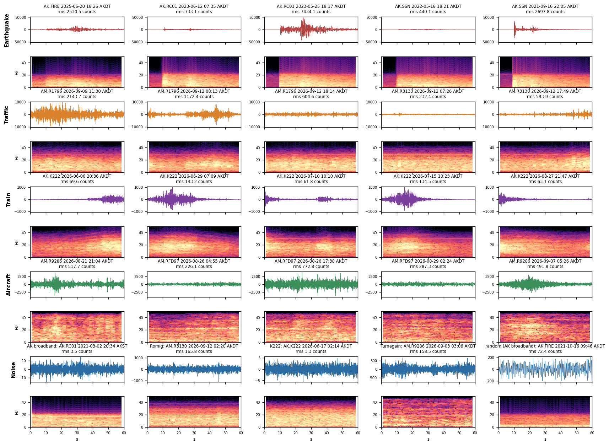
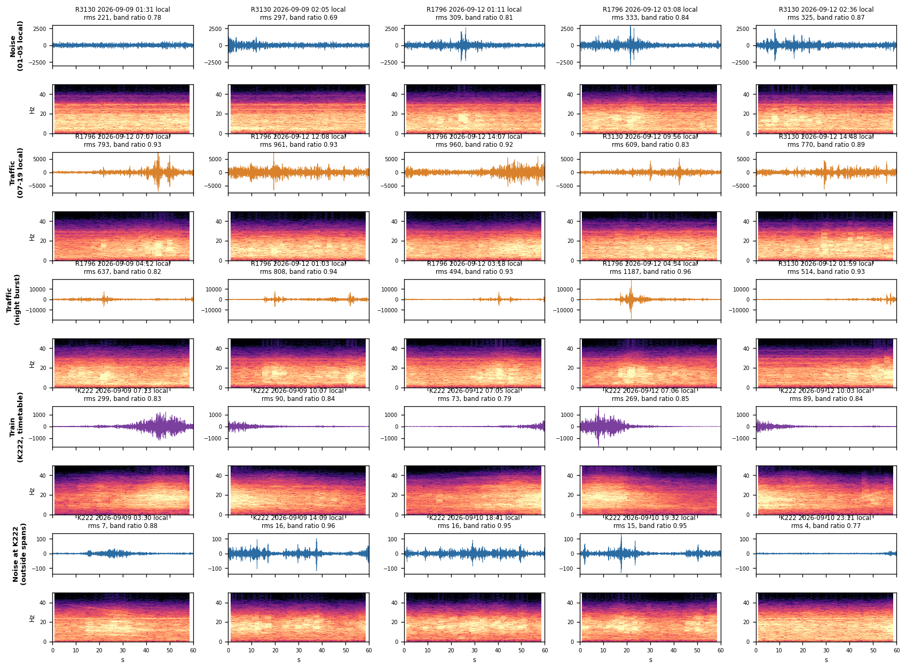

Denolle Lab · University of Washington · SeismicML with Concord Consortium
What shakes the ground in Anchorage?
We train small convolutional neural networks (CNNs) to sort 60 seconds of vertical ground motion into earthquake, traffic, train, aircraft or quiet background. They are small enough to run in a middle-school browser. The data come from public seismometers around Anchorage, including two Raspberry Shakes at Romig Middle School.
This page covers the data, a map, a catalog of the signals and earthquakes, how the network makes a prediction, and what it still gets wrong. Per-model scores are on the model page.
5signal classes trained (avalanche planned)
12stations: 4 AK network, 8 Raspberry Shake
477catalog earthquakes in training, M 3.0–6.0
485held-out windows no model trained on
9.4kparameters in the compact CNN
Datasets
We built four training sets, one per signal source. Each set has its own Noise windows, recorded at quiet hours or just before an earthquake. Every window is 60 s of the vertical component at 100 samples per second, so the model always gets 6,000 numbers. No window was labelled by hand. Each label comes from a rule that can be rerun, such as a catalog time, a train timetable or the hour of day.
Set
Stations
Sensor
Period
Label rule
Signal windows
Noise windows
Earthquake
AK.FIRE, AK.RC01, AK.SSN
broadband seismometer
2020-06 to 2025-11
USGS ComCat event M 3–7 within 150 km; window cut at the reviewed P pick
1,024
926
Traffic
6 Shakes at schools incl. Romig (R1796, R3130)
Raspberry Shake geophone
week of 2026-09-07
07–19 local = Traffic, 01–05 local = Noise; loud night passes = Traffic
7,663
7,914
Train
AK.K222, Potter Marsh
strong-motion accelerometer
2026-05-15 to 09-13
Alaska Railroad timetable ±15 min, then an energy threshold
734
8,848
Aircraft
AM.RFD97, AM.R9286, Turnagain
Raspberry Shake geophone
2026-08-17 to 09-13
20–45 Hz burst seen on both stations at once, 3 km from runway 15/33
979
3,429
Before training, the Noise class is capped at 150 windows per station, so that K222's 8,848 quiet windows do not swamp the other classes. Training, validation and test sets are split by earthquake or by station-day, so two windows from one event never land on both sides. The held-out set has 485 more windows (about 100 per class) recorded after every training date, at the same stations.

Five training windows per class, each 60 s of filtered counts with its spectrogram below. Earthquakes start with a sharp P arrival. Traffic is continuous 5–30 Hz energy. A train is a long, slowly rising and falling rumble. Aircraft add energy above 20 Hz.
Map: Romig Middle School, stations and earthquakes
Use the buttons to switch between the city, where the traffic, train and aircraft stations are, and the region, where the earthquakes are. Click any symbol for details. Raspberry Shake positions are rounded by the network for the hosts' privacy and are only good to about 1 km. The Romig marker is placed by hand next to its station and is approximate.
Each class is a different physical source. Sources differ in how long they last, which frequencies they carry, and how they start. Those are the features the CNN learns to pick up.
Earthquake
A fault slips somewhere in south-central Alaska, most often 30–70 km down in the subducting Pacific plate. The P wave arrives first as a sharp onset. The S wave and a long coda follow over tens of seconds.
Duration
10–90 s, sharp start then slow decay
Frequency
1–15 Hz, lower for bigger or farther quakes
Label
USGS ComCat catalog with reviewed P picks
Traffic
Cars, trucks and buses on streets near the school. Each vehicle passing adds a few seconds of shaking. In the daytime these overlap into a steady hum that stops at night.
Duration
continuous in the daytime; 2–10 s per vehicle
Frequency
5–30 Hz
Label
time of day, plus loud single night passes
Train
Alaska Railroad trains on the Seward line, 100 m from station K222 at Potter Marsh. A train is heard for a minute or more and grows and fades as it passes.
Duration
1–3 min, symmetric build-up and fade
Frequency
2–20 Hz, with a strong low-frequency part
Label
passenger timetable ± 15 min, energy threshold
Aircraft
Jets landing on or taking off from runway 15/33 at Ted Stevens Anchorage International. Engine sound couples into the ground, so the Shakes in Turnagain pick it up.
Duration
15–60 s
Frequency
20–45 Hz, above most other sources
Label
high-frequency burst on both Turnagain Shakes at once
Noise
Everything else: wind, ocean microseism, furnaces, footsteps, the instrument itself. It differs a lot between sites. A quiet K222 window is about 2 counts rms, while a Romig window is about 200.
Duration
always present
Frequency
broad; site-dependent
Label
01–05 local time, or 30–90 s before a P wave
Avalanche planned
Snow avalanches in the Chugach make emergent, cigar-shaped signals that last tens of seconds. We have not collected these yet; see issue #9.
Duration
20–120 s, slow start
Frequency
1–10 Hz
Label
not yet

Example windows of each class from the label verification report.
Earthquake catalog
These are the USGS catalog earthquakes behind the Earthquake class. of them (2020–2025) are used in training and (2026) only in the held-out test. Most are small and deep, under the Cook Inlet and the Susitna basin, where the Pacific plate dives beneath Alaska. Each event appears at up to three broadband stations.
Magnitude
Depth (km)
Events per year
Time (UTC)
M
Depth km
Place
Set
USGS
Click a column header to sort · source: USGS ComCat
How the CNN predicts a class
A convolutional neural network learns a set of short pattern detectors called filters and slides each one along the waveform. Each filter outputs a high value wherever the waveform looks like its pattern. Stacking several layers lets later filters combine simple patterns, such as a sharp jump or a 25 Hz wiggle, into more specific ones, such as "a sharp jump followed by growing wiggles". At the end, the network adds up the evidence and gives one probability per class.
Normalize. The 6,000-sample window is band-passed (2–20 Hz) and scaled to zero mean and unit standard deviation. The network sees the shape of the shaking, not how loud it is.
Convolve. Layer 1 slides 16 filters, each 7 samples (0.07 s) long, along the trace. Each filter responds to one short shape. Max-pooling keeps the strongest response in each pair of neighbouring samples, so the trace gets shorter.
Combine. Layers 2 and 3 (32 and 64 filters) work on the outputs of the layer below. One layer-3 feature looks at 45 input samples, about 0.45 s of ground motion, and can recognise a pattern such as "impulsive onset" or "high-frequency buzz".
Average. Global average pooling turns each of the 64 feature maps into one number: how much of that pattern the 60 s window contains.
Decide. A final linear layer weighs those 64 numbers for each class. A softmax turns the scores into probabilities. The predicted class is the largest probability, and that probability is the model's confidence.
Training adjusts every filter and weight (9,412 numbers in the compact model, about 94,000 in the standard one) so that the probability of the correct label goes up on thousands of labeled windows. The interactive explainer app runs the compact model in the browser and shows each layer's output for a real waveform.
How often is it right?
These are held-out results for the two standard models: windows recorded after every training date. Rows are the true class and columns are the prediction. The diagonal is correct.
Limitations
Labels come from rules, not from people
The labels are "weak": 07–19 h at a school is called Traffic even if a given minute is quiet, and a timetable window is called Train even if the train is late. Some held-out "errors" are really wrong labels. The review site lets students and teachers mark windows they disagree with.
Each class comes from one place
Trains are only from K222, aircraft only from Turnagain, and earthquakes only from AK broadbands. A model could learn the site or the sensor instead of the source. For example, it could treat "accelerometer" as Train. Held-out windows come from the same stations, so this test cannot catch that. A Shake that is new to the model is the real test.
No sense of loudness, short memory
Because each window is z-scored, a faint distant quake and a strong local one look alike, and so can a gust of wind. Each feature also sees only about 0.45 s, and the global average discards order. The network knows what patterns occur but not when. Slow, long sources such as trains, and future avalanches, depend on fairly crude summaries.
One label per minute
A 60 s window can hold a truck and an earthquake. The model must choose one, and it has never seen mixed windows. It also cannot say "something new". An avalanche or a snowplow gets forced into the nearest known class, often with high confidence.
Small earthquakes and short periods
The catalog starts at M 3.0, and the traffic set covers a single week in September. Smaller local quakes, winter conditions (frozen ground, snow, studded tires) and holiday traffic are not represented. Noise vs Aircraft (8–10% of noise windows) and Traffic vs Noise are still the most common confusions.
Held-out Train windows are not independent
Only 85 Train windows exist outside training, and they come from the test split of the human-source models, not from new days. Their 100% score is probably optimistic.